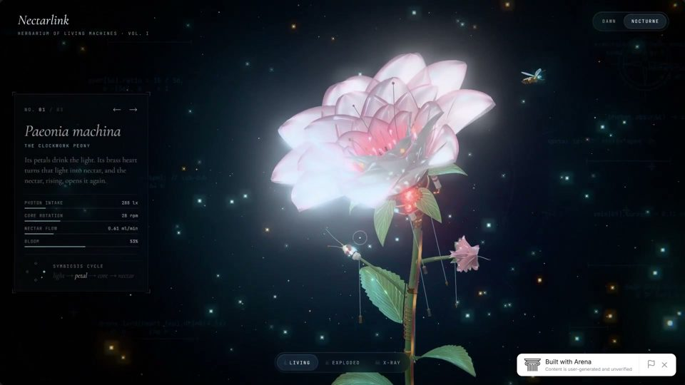
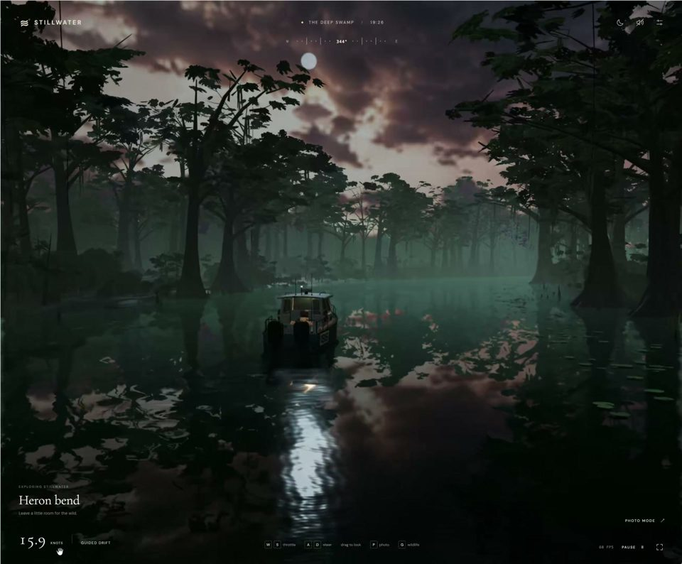
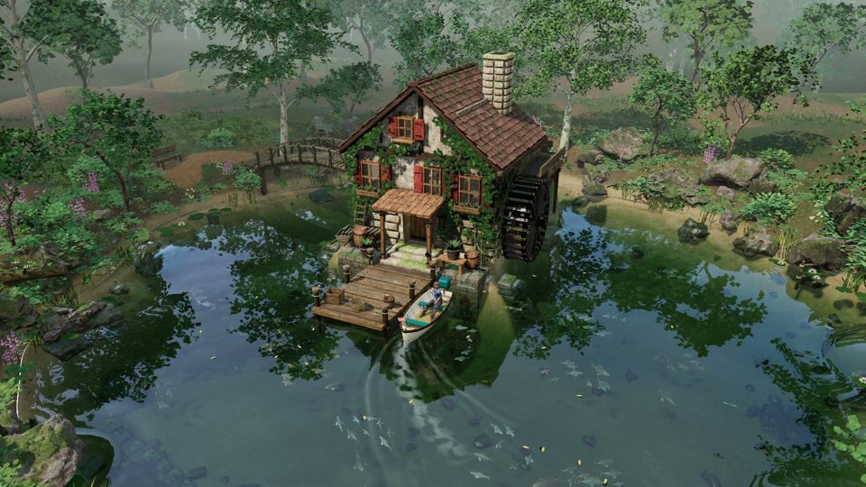
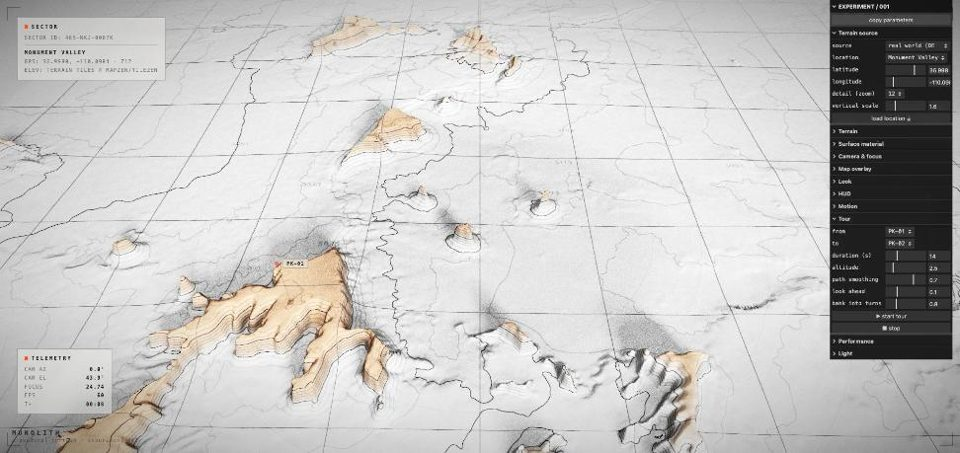

Tags / Genre
Nature / landscape AI videos
35 hand-picked nature / landscape AI videos, 13 with full prompts — Seedance, Veo, Kling, Sora and more.
Video 7
 TikTok
TikTokMirror Island
VisionaryVistas · Midjourney
Surreal / dreamcore Fantasy / myth Nature / landscape
 XPrompt
XPromptFan Blade at Three Bridges
John · Seedance 2.5
Cinematic realism Chinese Martial arts / action Nature / landscape
 XPrompt
XPromptAn Italian Afternoon on DV
Saul Goodman · Seedance 2.5
Documentary handheld European Daily life Nature / landscape
 XPrompt
XPromptFirst-Person Cliff Jump
Abdul Shakoor · Seedance 2.5
Cinematic realism American Sports / extreme Nature / landscape
 XPrompt
XPromptCrossing Under Cherry Blossoms
Maha · Seedance 2.0
Cinematic realism Japanese Romance / youth Nature / landscape
 XPrompt
XPrompt13.8 Billion Years, One Take
Ruzaina · Seedance 2.5
Cinematic realism Sci-fi Nature / landscape
 X
XSummer in a Seaside Town
GENEL | リアルなAI動画制作 · Seedance 2.5
Cinematic realism Japanese Travel / city Nature / landscape
Images 15
 X4Prompt
X4PromptForest Path Fairy Tale
Glitter Gal · Midjourney
Watercolor storybook European Fantasy / myth Nature / landscape
 X4Prompt
X4PromptHidden Green Retreat
Glitter Gal · Midjourney
Cinematic realism Chinese Nature / landscape
 X
XThe Klondike Trail
Leiko Tar
Surreal / dreamcore American Nature / landscape Historical / period
 X4
X4Hidden in Plain Sight
Lloyd Creates
Surreal / dreamcore European Nature / landscape
 X
XBefore Night Knows My Name
Leiko Tar
Surreal / dreamcore Nature / landscape
 X4
X4Tiny Figure, Vast Land
unseen
Film / retro Surreal / dreamcore Nature / landscape
 X4
X4Snow and Waterfalls
unseen
Surreal / dreamcore Nature / landscape
 X4Prompt
X4PromptRainbow Light Beams
𝕁𝕦𝕝𝕚𝕒𝕟 ℂ · Midjourney
Surreal / dreamcore Cinematic realism Sci-fi Nature / landscape
 X4Prompt
X4PromptSnowy Hillside Town
Sgt Sref · Midjourney
Watercolor storybook European Nature / landscape Daily life
 X4Prompt
X4PromptMediterranean Village
Glitter Gal · Midjourney
Watercolor storybook European Travel / city Nature / landscape
 X
XAutumn Folk Village
Andy Masley · Midjourney
Watercolor storybook American Nature / landscape Historical / period
 X4Prompt
X4PromptThe Green Valley
Sgt Sref
Film / retro Cinematic realism Nature / landscape
 XPrompt
XPromptImpasto Still Lake
Viki · GPT Image 2.5 Flare
Surreal / dreamcore Nature / landscape
 X2Prompt
X2PromptMinimal Landscape Poster
Taaruk · GPT Image 2
Commercial / ad look Nature / landscape
 X4
X4Impressionism Through Rain
Nick St. Pierre · Midjourney v7
Surreal / dreamcore European Nature / landscape
Coding 13

XMechanical Flowers
Bee · Gemini 4 Carbon
Surreal / dreamcore Sci-fi Nature / landscape

XMisty Swamp
Chetan Ankola · GPT-6 Astra
Cinematic realism Nature / landscape

XStill Water Cabin
Mohamed · Codex (GPT)
Game CG Daily life Nature / landscape
 X
XPhysics Campfire
Leon Lin · Opus 5.5 (Claude)
Cinematic realism Nature / landscape
 X
XImpressionist Mountain Lake
Brian Gruber · Opus 5.5 (Claude)
Cinematic realism Nature / landscape
 X
XNight Boat, Cherry River
Meng To · Claude Opus 5.5
Game CG Japanese Nature / landscape Travel / city
 X
XMoonlit Creek Stones
Chetan Ankola · GPT-6 Astra
Game CG Japanese Nature / landscape
 X
XVerdant Forest
Leon Lin · GPT-6 Astra
Game CG Nature / landscape
 X
XNagi, Watching Waves
Noxel · OpenAI（作者称“dotくん”）
Cinematic realism Japanese Nature / landscape
 X
XLight of the Shallows
ついはじめ | Hajime Tsui · Claude Code (Claude Opus 5.5)
Cinematic realism Nature / landscape

XContour Earth
Zsolt Kacso · Claude Code (Fable)
Game CG Nature / landscape
 X
XUnderstory
Zsolt Kacso · GPT-5.6 Sol
Cinematic realism Nature / landscape
 X
XPine & Parcel
Mohamed · Codex
3D cartoon European Travel / city Nature / landscape